14 telas e estados · 43 componentes · personagens provisórios
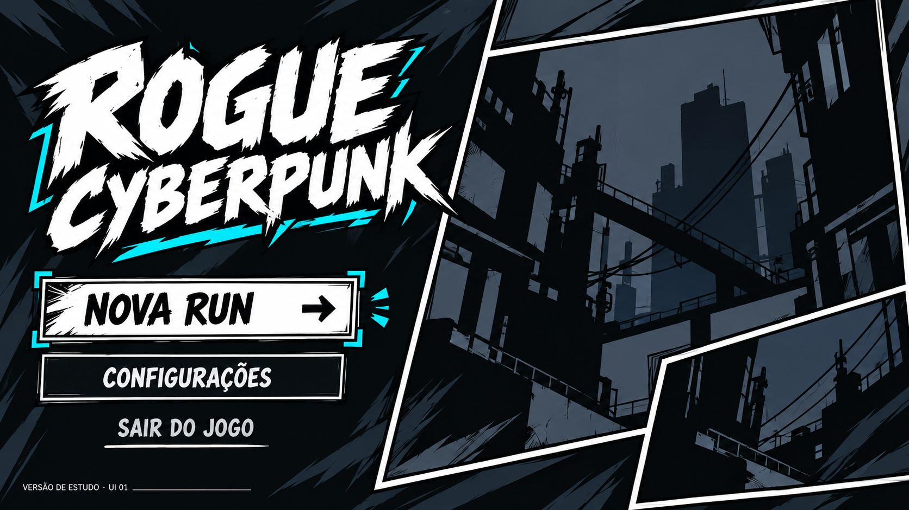
Estudo ilustrado
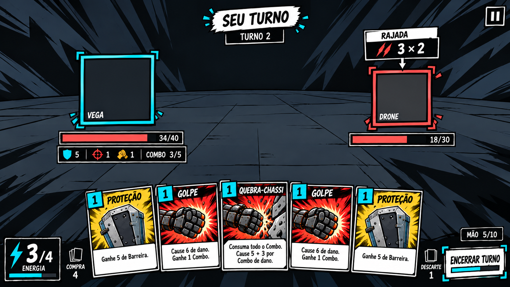
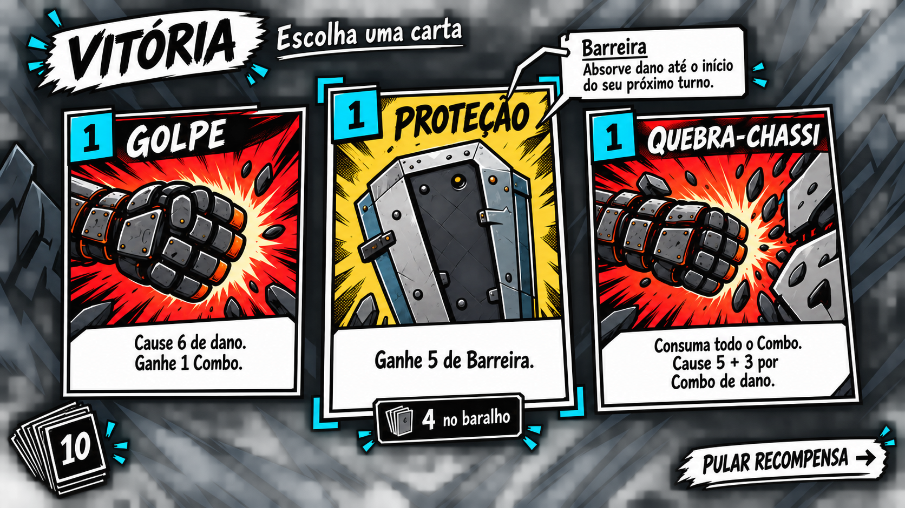
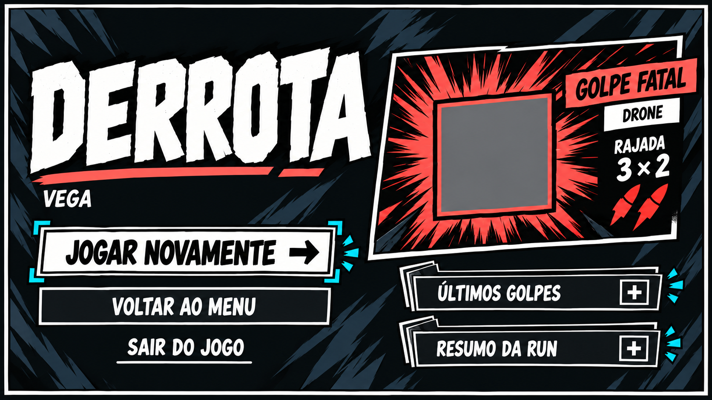
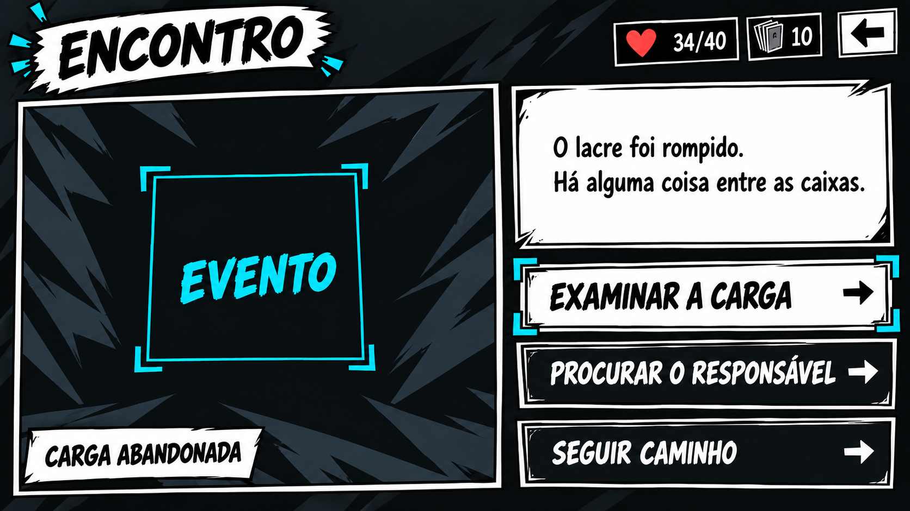
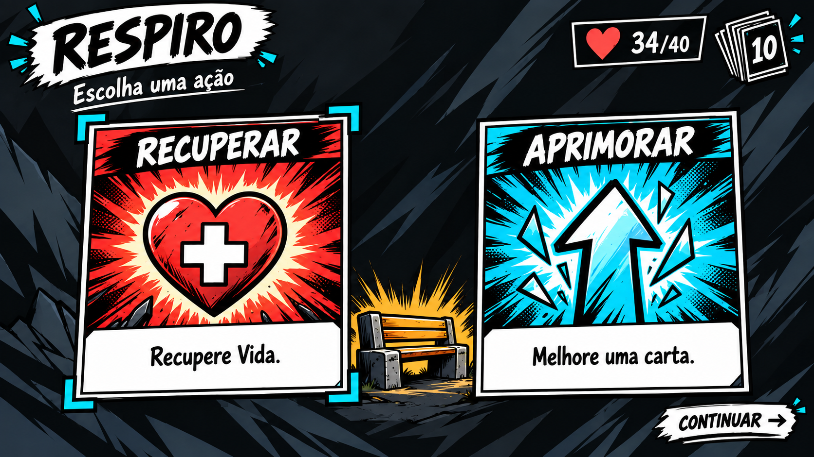
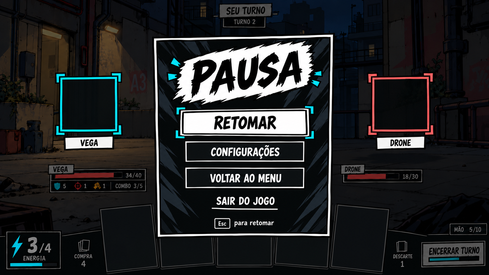
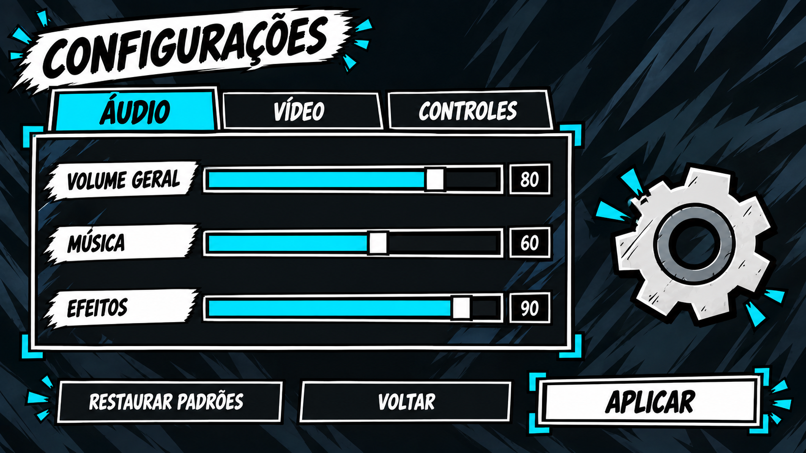
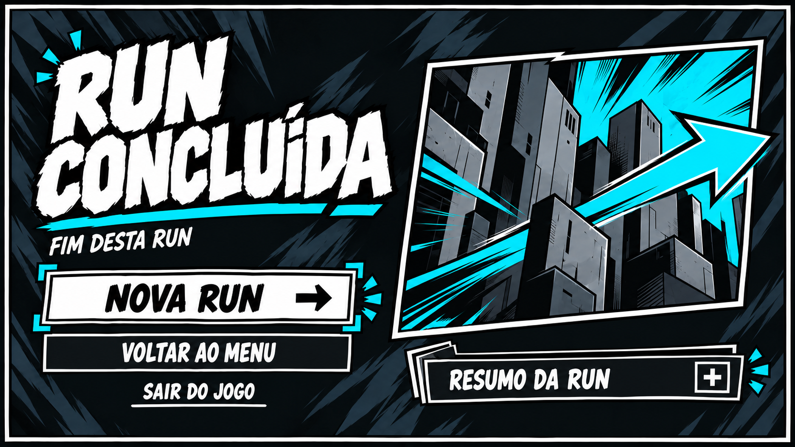
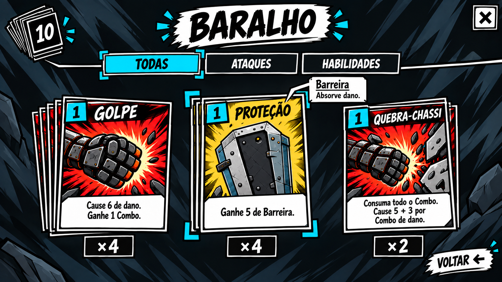
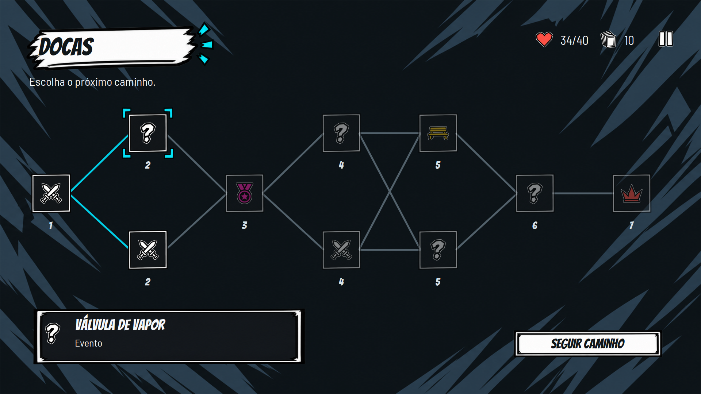
Composição com os componentes
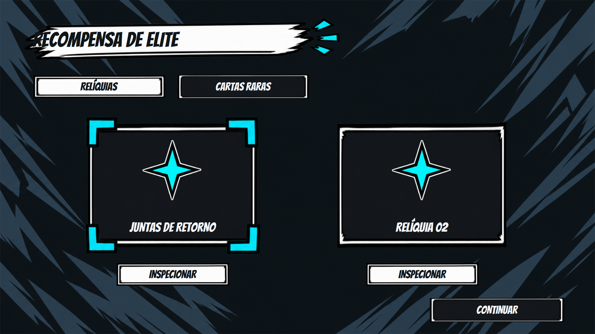
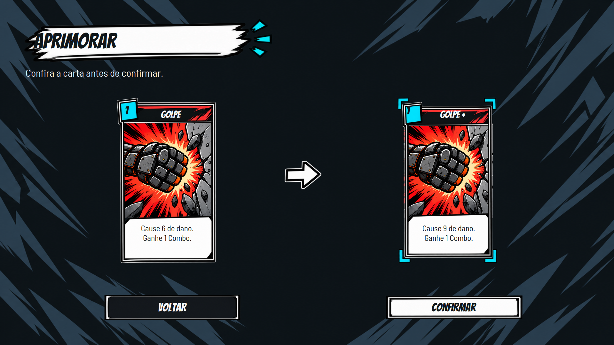
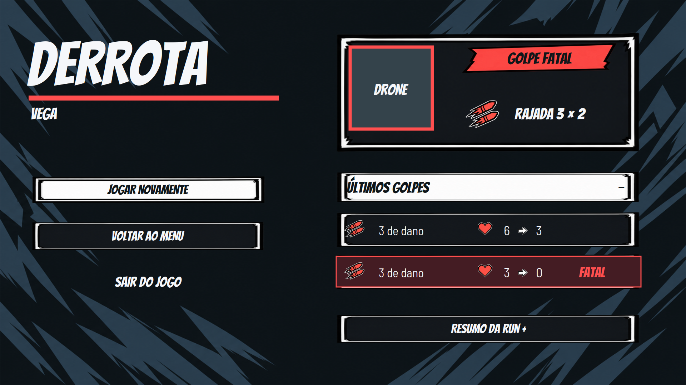
icones · 171 × 238 px
icones · 198 × 178 px
icones · 194 × 212 px
icones · 193 × 191 px
icones · 212 × 206 px
icones · 270 × 166 px
icones · 187 × 207 px
icones · 219 × 189 px
icones · 228 × 194 px
icones · 232 × 195 px
icones · 217 × 194 px
icones · 217 × 222 px
icones · 209 × 199 px
icones · 169 × 205 px
icones · 223 × 193 px
icones · 142 × 191 px
icones · 234 × 156 px
icones · 151 × 160 px
icones · 185 × 184 px
icones · 186 × 146 px
controles · 554 × 135 px
controles · 583 × 185 px
controles · 562 × 140 px
controles · 570 × 257 px
controles · 543 × 242 px
controles · 610 × 154 px
hud · 400 × 84 px
hud · 347 × 27 px
hud · 307 × 237 px
hud · 175 × 178 px
hud · 360 × 112 px
hud · 359 × 279 px
hud · 236 × 225 px
hud · 398 × 144 px
hud · 414 × 148 px
cartas · 499 × 787 px
cartas · 493 × 787 px
cartas · 525 × 832 px
ilustracoes · 676 × 700 px